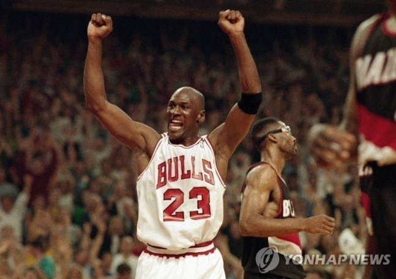

특별한 경우를 제외하고 보통 구단주는 자기 팀 선수가 다른 팀 선수보다 낫다고 주장한다. 그러나 LA 레이커스의 구단주 지니 버스는 너무 정직했다. 자기 팀 대들보인 르브론 제임스를 무시하고 마이클 조던이 GOAT(역대 최고 선수라고 했다. 조던과 제임스 중 누가 GOAT냐에 대한 논쟁은 지금도 계속되고 있다.

시카고 불스를 6차례 우승을 이끈 조던이 GOAT라고 하는 팬들이 있는가 하면, 팀을 바꾸어가면서 4차례 우승 반지를 거머쥔 제임스가 더 낫다고 주장하는 팬들도 있다.
그러나 버스의 생각은 달랐다. NBA는 최근 트위터에 곧 출시될 NBA 2K23 홍보 영상을 올렸다. 여기에는 조던의 15개 가장 상징적인 순간이 소개됐다.
이때 버스가 등장해 "조던은 역사상 가장 위대한 선수다"라고 말했다. 이를 본 팬들이 충격을 받았다. 자기 프랜차이즈 슈퍼스타인 제임스를 무시했기 때문이다. 일부 팬들은 "어떻게 자기 선수를 무시할 수 있느냐"며 격앙된 반응을 보였다. 반면, "농담이겠지. 버스는 너무 정직해서 탈이야"라고 적은 팬들도 있었다.